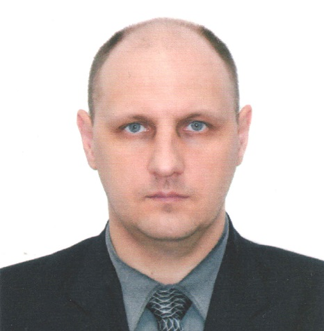

- Dmitriy, Russkikh.
- Email: loctyr@gmail.com, Skype: gammon421.
- Find a job as a C / C ++ programmer.
- C/C++, Qt, SVN.
- Code examples
ipv4addressedit.h
ipv4addressedit.cpp [ipv4addressedit.hpp](https://loctyr.github.io/rsschool-cv/ipv4addressedit.hpp)
-
Creation of a ground control station UAV.
Receiving telemetry data from the aircraft.
Sending commands to control UAVs and ground equipment.
Reception and processing of video and photo materials received from the payload.
Data generation for target designation.
Work with cartographic material using Google Map, Yandex Map.
Display of moving, point, linear and areal objects.
Work with graphics (OpenGL).
Creating custom components for Qt, cross-platform programming Window, AstaLinux (CE, SE).
C++ 11 standard.
Creation of servers and clients for work on the TCP/IP protocol.
Development of software documentation in accordance with GOST 19.
-
Izhevsk State Technical University M.T. Kalashnikov, Izhevsk. Instrument Engineering Faculty. Department of Applied Mathematics and Computer Science. Year of graduation 1998.
- I read technical literature with a dictionary.